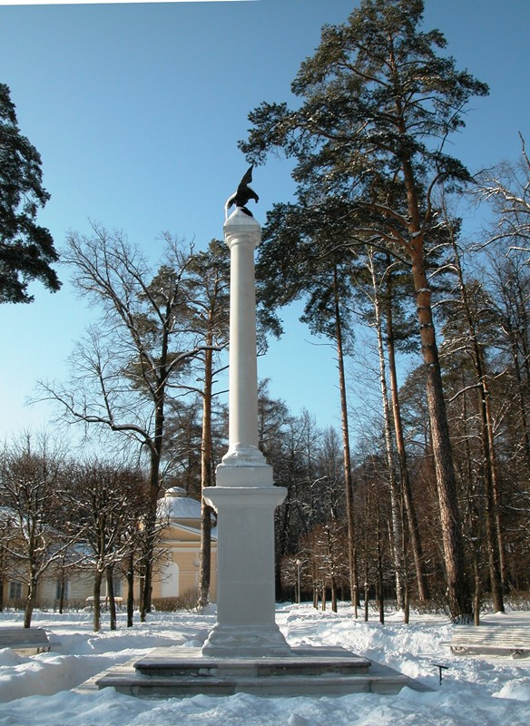

|  | Министерство культуры Российской Федерации Портал Культура.рф Проект «Образы России» |
The memorial estate Arkhangelskoye
Thу memorable column to the emperor To Alexander lll

Imperators columns.
One of prince N. Yusupov the most honorary responsibilities was to organize Russian monarchs coronation ceremonies. The first coronation organized by Yusupov was Paul I of Russia enthronement in April 1797. He performed honorary duty of the coronation main marshal during Alexander I's and Nicolas I's coronation. It was a tradition for the members of the Russian Imperial family to visit Arkhangelskoe. In honor of this visits memory columns were erected in the park. There are 5 of them:
column in honor of Alexander I, he visited estate in 1816 and in 1818 ( column is on the Pushkin's alley, it was made by Moscow workshop of Italian marble master C. Kampioni in 1816, in 1827 it was toppled with cast iron eagle, restored in 2004);
column in honor of Nicolas I, who visited Arkhangelskoe after the coronation,which took place Cathedral of Dormition in Kremlin Moscow 30 September 1826 (column was made by the same workshop in 1827, it was erected to the West from the Podgornaya wall of the Lower terrace , restored in 2008-2009).
column in honor of Alexander II, who visited the estate in 1860s (column was erected in front of the Podgornaya wall's cavern, Lower terrace).
Column in honor of Alexander III, who was invite to visit Arkhangelskoe in 1888. (column was made in the same Kampioni's workshop and erected in the western part of the park , near “Caprice” complex).
Column in honor of Nicolas II, he visited estate after his coronation in 1896 (column was constructed in the southern part of the Big parterre.
In the middle the of XX century columns in honor of Alexander II and Nicolas II were lost.